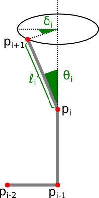

— for the impatient : a dodecahedral chain —
A polygonal chain is a connected series of line segments in 3-dimensional space. Various physical objects can be modeled as polygonal chains, two example being proteins, which are chains of amino acids, and robotic arms. An interesting problem is how to move one chain from one configuration to another, with the movement satisfying a specified set of constraints, e.g. no self-intersections, the angles at some joints are fixed, we can only rotate one joint at a time, and so on. Two well-known applications are the problems of understanding protein folding, and motion planning for robotic arms.
A (polygonal) chain of length \(n\) is just a sequence of \( (n+1) \) vertices, that is :
So an array of 3-dimensional vectors is the most natural way to specify a chain. It is also the most practical way if we want to draw the chain on-screen with a 3D library. However, when it comes to moving the chain, it's not very useful. Of course with this representation we can easily move one vertice of the chain, but it's not a movement meaning much in terms of the physical objects a chain is modeling (e.g. we can't move one single joint of a robotic arm without dislocating the robot). So, instead of coordinates for every vertices of the chain, what we want are the coordinates of the origin of the chain, the lengths of its segments, and angles specifying how the chain is bended. There are two kinds of such angles : the turn angles and the dihedral angles. Formally, we have the following parameters :
I think a little drawing will be welcomed here :
How to calculate these parameters, when the \( p_i \) are given ? Well, to see that, let us first define the following vectors (this will simplify things) :
Then, remembering the geometric definition of the dot product, it is easy to compute the parameters from the direction vectors :
The last identity ought to be clarified : the cross product \( \times \) is used to compute the normal vectors of the planes \( (p_{i-2}p_{i-1}p_{i}) \) and \( (p_{i-1}p_{i}p_{i+1}) \). The angle between those planes is then the angle between their normal vectors. Also, one last little detail : with these definitions, what are \( \theta_0 \), \( \delta_0 \), and \( \delta_1 \) ? Well, our trick to handle these cases will be to adopt the convention that \( e_{-2} = (0, -1, 0) \) and \( e_{-1} = (1, 0, 0) \).
The invert transform, going from the \( ( \ell_i, \theta_i, \delta_i ) \) to the \( p_i \), is a bit trickier, but still easy. A first algorithm would look something like this (here written in pseudocode) :
function param2points( len, theta, delta )
e[-2] := ( 0,-1, 0 )
e[-1] := ( 1, 0, 0 )
for i in 0..n-1 do
e[i] := e[i-1]
set length of e[i] to len[i]
rotate e[i] by theta[i] around e[i-2] x e[i-1]
rotate e[i] by delta[i] around e[i-1]
p[0] := ( 0, 0, 0 )
for i in 0..n-1 do
p[i+1] := p[i] + e[i]
return p
But we need to be more careful because this code doesn't work every time.
Indeed, when theta[i-1] = 0, that is when e[i-2] and e[i-1] are collinear,
the cross product in line 8 is zero, and so we don't have an axis of rotation for the angle theta[i] !
An easy way out of this problem is keeping track of an axis of rotation, and rotating it along with the chain as
we build the direction vectors. So we just change our code to have the following (modified lines are highlighted) :
axis := e[i-2] x e[i-1]
for i in 0..n-1 do
e[i] := e[i-1]
set length of e[i] to len[i]
rotate e[i] by theta[i] around axis
rotate e[i] by delta[i] around e[i-1]
rotate axis by delta[i] around e[i-1]
And that's it.
Some words about the implementation with Three.js now. I'll not go into too much detail on the code I wrote (the aim of this page is not to be a course on JavaScript or Three.js), the curious reader can simply look at the commented source code (but bear in mind that I'm not really a programmer, so maybe this code could have been done more elegantly). I did something like this :
Chain = function() {
THREE.Object3D.call( this );
// one joint will be created with THREE.SphereGeometry
// one segment will be created with THREE.CylinderGeometry
this.update = function( points ) {
// update the chain so vertex i is at position points[i]
// (and when doing this, avoid creating new geometries
// if possible, i.e. we don't just delete the old chain
// and build a new one from scratch, we simply add/remove
// segments as needed, and update the coordinates)
}
}
Chain.prototype = Object.create( THREE.Object3D.prototype );
function params2points( param ) {
// implementation of the pseudocode algorithm, and :
// param[i][0] is len[i]
// param[i][1] is theta[i]
// param[i][2] is delta[i]
}
function points2params( p ) {
// reverse transformation
}
If you don't like the defaults I choose for the chain (e.g. thickness, colors, details)
it is easy to change them in the code.
Now, to use Chain.js, we simply do this :
var param = [
// len theta delta
[ 10, 60, 15 ],
[ 10, 60, 15 ],
[ 10, 60, 15 ],
[ 10, 60, 15 ]
];
var chain = new Chain();
chain.update( params2points( param ) );
scene.add( chain );
A slightly more advanced example is available in app2.html. It is a polygonal chain of length \( 19 \), folding and unfolding in a dodecahedral shape. You can see that in this animation, the chain sometimes intersects itself. We will see in the next page how to detect self-intersections.